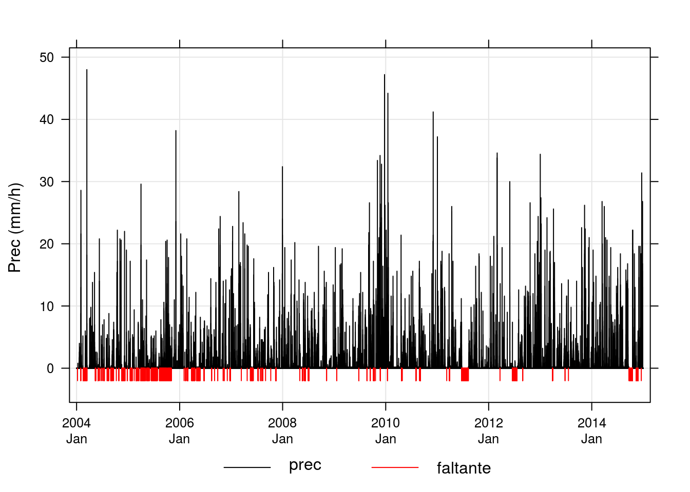
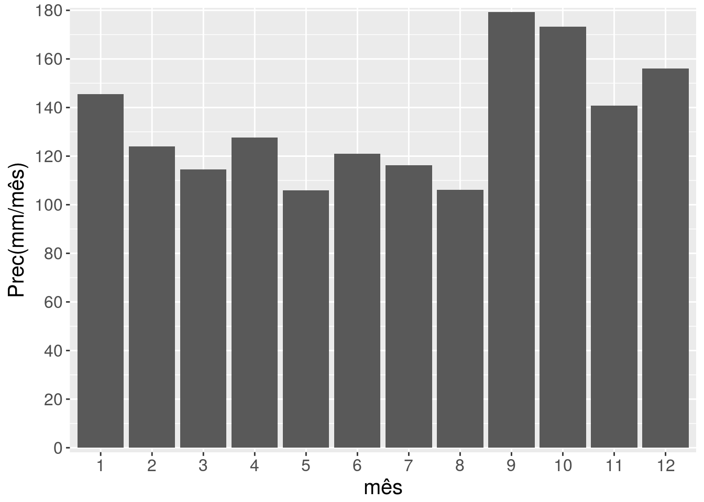
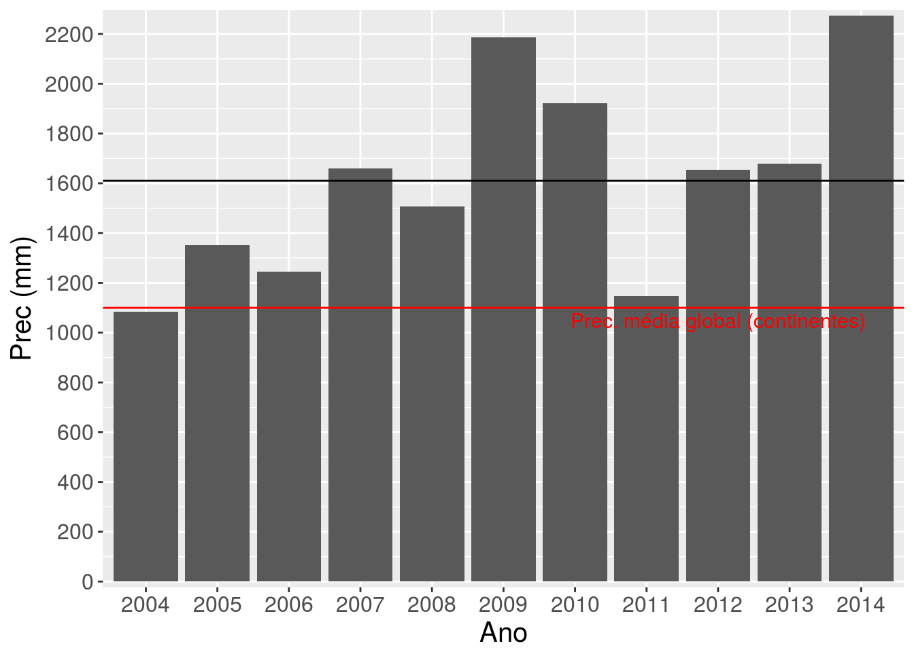
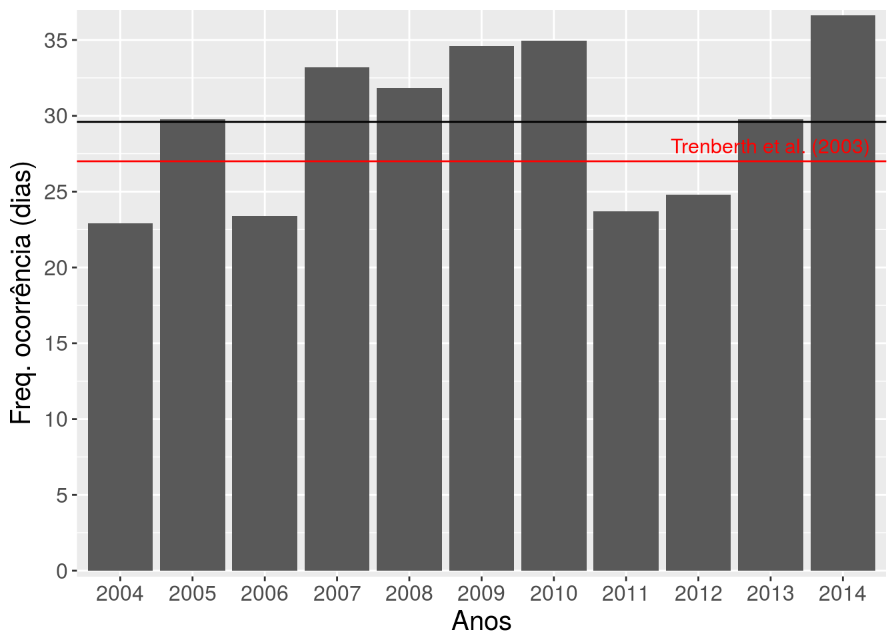
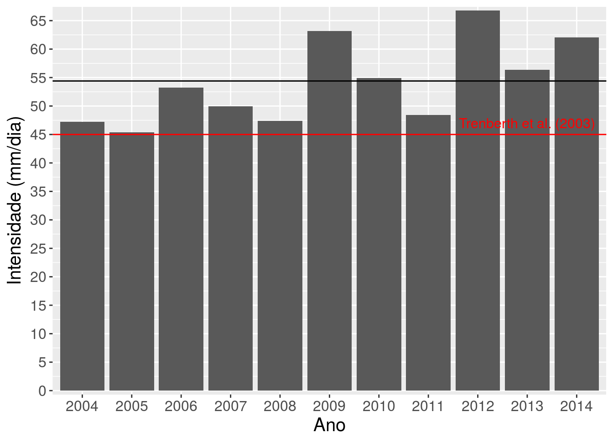
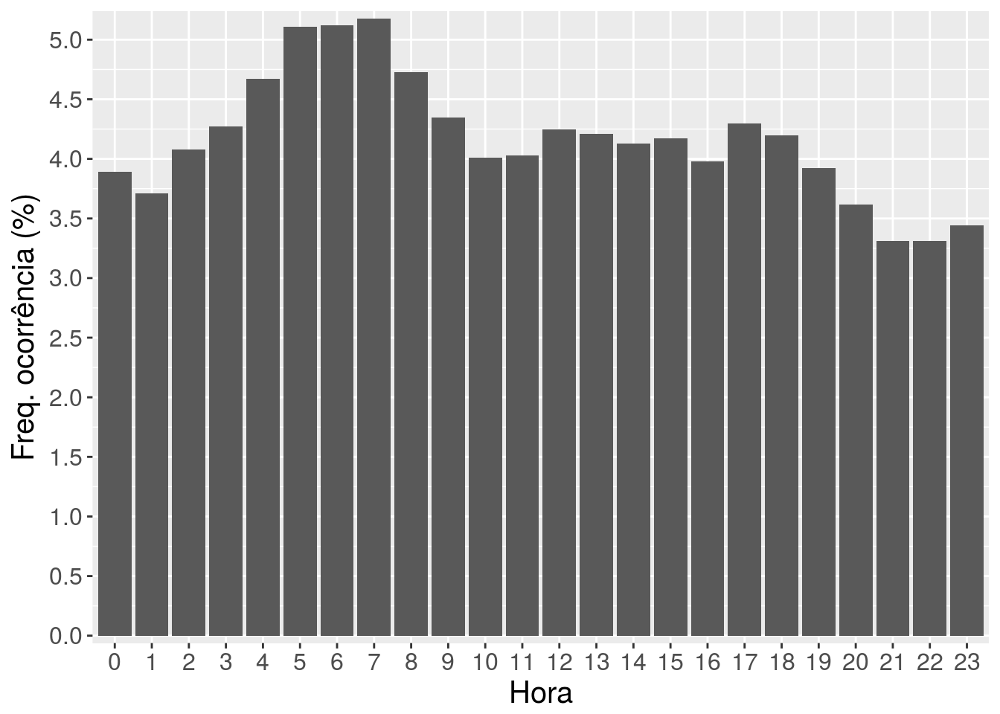
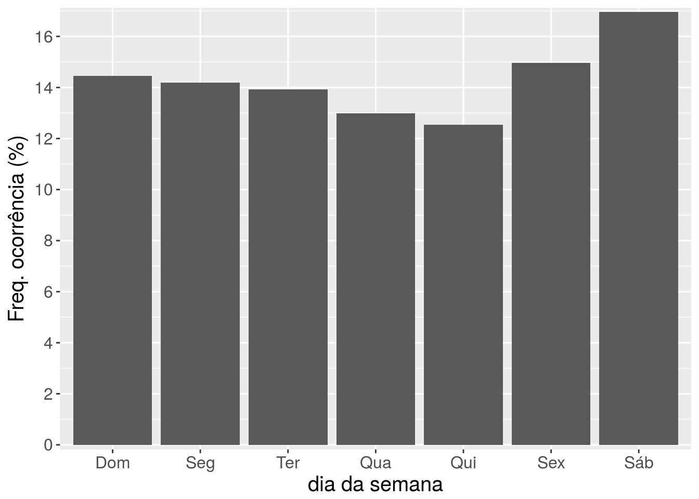

9.6 Exemplo de manipulação de dados
Nesta seção vamos fazer um estudo de caso para demostrar diversas funções do tidyverse aplicadas ao conjunto de dados de precipitação horária de Santa Maria-RS.
Objetivos:
determinar a quantidade de dados de chuva horária faltantes em termos absolutos (número de casos) e relativos (% do total);
visualizar por meio de um gráfico a variação temporal da chuva horária com a identificação das falhas
determinar o número de dados faltantes por ano e verifique se o seu resultado confere com aquele da inspeção visual do gráfico;
determinar o valor da chuva máxima horária e a data de ocorrência do evento;
determinar a chuva máxima diária e a data de ocorrência do evento;
fazer o pluviograma mensal climatológico (médias dos totais mensais de precipitação);
plotar os totais anuais de chuva para cada ano;
determinar a frequência de ocorrência da chuva para cada ano;
determinar a intensidade média da chuva (em mm/dia) em Santa Maria;
determinar a frequência de ocorrência de chuva (ou seja, o número de casos em que choveu) para cada hora do dia (das 0 às 23 h)
determinar a frequência de ocorrência (%) de precipitação para cada dia da semana;
Dados
# definindo os horários como UTC para essa sessão do R
Sys.setenv(TZ = "UTC")
hprec_url <- "https://github.com/lhmet/adar-ufsm/blob/master/data/hprec_sm.RDS?raw=true"
# importa dados, hprec: precipitação horária da EMA de SM
hprec <- rio::import(
file = hprec_url,
format = "RDS"
)
str(hprec)
#> 'data.frame': 96428 obs. of 3 variables:
#> $ site: chr "A803" "A803" "A803" "A803" ...
#> $ date: chr "2004-01-01 00:00:00" "2004-01-01 01:00:00" "2004-01-01 02:00:00" "2004-01-01 03:00:00" ...
#> $ prec: num 0 0 0 0 0 0 0 0 0 0 ...
summary(hprec)
#> site date prec
#> Length:96428 Length:96428 Min. :-9999.0
#> Class :character Class :character 1st Qu.: 0.0
#> Mode :character Mode :character Median : 0.0
#> Mean : -425.8
#> 3rd Qu.: 0.0
#> Max. : 48.0Conversão para tibble e atribuição de dados faltantes:
hprec <- as_tibble(hprec) %>%
mutate(prec = ifelse(prec < 0, NA, prec))
hprec
#> # A tibble: 96,428 x 3
#> site date prec
#> <chr> <chr> <dbl>
#> 1 A803 2004-01-01 00:00:00 0
#> 2 A803 2004-01-01 01:00:00 0
#> 3 A803 2004-01-01 02:00:00 0
#> 4 A803 2004-01-01 03:00:00 0
#> 5 A803 2004-01-01 04:00:00 0
#> 6 A803 2004-01-01 05:00:00 0
#> 7 A803 2004-01-01 06:00:00 0
#> 8 A803 2004-01-01 07:00:00 0
#> 9 A803 2004-01-01 08:00:00 0
#> 10 A803 2004-01-01 09:00:00 0
#> # ... with 96,418 more rows
summary(hprec)
#> site date prec
#> Length:96428 Length:96428 Min. : 0.000
#> Class :character Class :character 1st Qu.: 0.000
#> Mode :character Mode :character Median : 0.000
#> Mean : 0.192
#> 3rd Qu.: 0.000
#> Max. :48.000
#> NA's :41081. Disponibilidade de dados.
- Determine a quantidade de dados de chuva horária faltantes em termos absolutos (número de casos) e relativos (% do total).
# converte data e horas para POSIX
hprec <- mutate(hprec, date = as.POSIXct(date))
# número de casos faltantes
sum(is.na(hprec$prec))
#> [1] 4108
# porcentagem de casos faltantes
sum(is.na(hprec$prec)) / nrow(hprec) * 100
#> [1] 4.260173- Faça um gráfico da chuva horária no tempo que permita identificar os períodos de falhas e que os anos sejam visíveis no eixo x. O gráfico deve ter aspecto similar ao mostrado na Figura abaixo.
# dados para plot; adiciona uma prec modificada, para mostrar dados faltantes
hprec_plot <- mutate(
hprec
, faltante = ifelse(is.na(prec), -2, NA)
)
hprec_plot <- as.data.frame(hprec_plot)
# plot da chuva no tempo
# tp <- timePlot(selectByDate(hprec_plot, year = 2014)
tp <- timePlot(
hprec_plot
, c("prec", "faltante")
, group = TRUE
, plot.type = "h"
, lty = 1
, col = c(1, 2)
, ylab = "Prec (mm/h)"
, date.format = "%Y\n%b"
)
- Baseado na inspeção visual do seu gráfico qual o ano que tem mais falhas? Calcule o número de dados faltantes por ano e verifique se o seu resultado confere com aquele da inspeção visual do gráfico. Apresente esses resultados em uma tabela.
######
# R: por inpeção visual sugere o ano de 2005 devido a sequência de falhas consecutivas
# Por meio do calculo verifica-se que foi 2011, uma falha longa contínua
######
tab_falt <- hprec %>%
# agrupa os dados por anos
group_by(year = lubridate::year(date)) %>%
# resumo estatístico (soma, porcentagem) da prec para cada componente do grupo
summarise(
n_falt = sum(is.na(prec))
, perc_falt = round(sum(is.na(prec)) / n() * 100, 1)
)
tab_falt
#> # A tibble: 11 x 3
#> year n_falt perc_falt
#> <dbl> <int> <dbl>
#> 1 2004 155 1.8
#> 2 2005 816 9.3
#> 3 2006 427 4.9
#> 4 2007 290 3.3
#> 5 2008 50 0.6
#> 6 2009 42 0.5
#> 7 2010 62 0.7
#> 8 2011 1120 12.8
#> 9 2012 313 3.6
#> 10 2013 15 0.2
#> 11 2014 818 9.32. Estatísticas básicas. Desconsidere os registros faltantes em seus cálculos.
- Qual o valor da chuva máxima horária? Em que data ocorreu o evento?
######
# (2a)
######
max(hprec$prec, na.rm = TRUE)
#> [1] 48
hprec %>% slice(which.max(prec)) %>% select(date)
#> # A tibble: 1 x 1
#> date
#> <dttm>
#> 1 2004-03-13 22:00:00- Qual a chuva máxima diária? Em que data ocorreu o evento?
######
# (2b)
######
dprec <-
# agrupando os dados por data (dias)
group_by(hprec, date = as.character(as.Date(date))) %>%
# resumo estatístico (soma) da prec para cada componente do grupo
dplyr::summarise(prec = sum(prec, na.rm = TRUE)) %>%
# seleciona do resultado somente as colunas date e prec
dplyr::select(date, prec) %>%
# converte date para classe POSIX
mutate(date = as.POSIXct(date))
# calcula máximo diário
max(dprec$prec)
#> [1] 130.4
# timePlot(dprec, "prec", plot.type = "h")
# encontra quando ocorreu o máximo
posicao <- which.max(dprec$prec)
dprec$date[posicao]
#> [1] "2010-01-16 UTC"3. Pluviograma mensal climatológico.
######
# (3a) e (3b)
######
(n_anos <- length(unique(year(hprec$date))))
#> [1] 11
# tabela com médias dos totais mensais, média do num. horas com prec
# usando os dados HORÁRIOS
tab_mon_h <-
# agrupa dados por mês
group_by(hprec, month = lubridate::month(date)) %>%
# reumo estatístico para cada componente do grupo
summarise(prec_med = sum(prec, na.rm = TRUE)/n_anos
# total de horas com prec
,n_horas_tot = sum(prec > 0, na.rm = TRUE)
# num. horas médio mensal (horas)
,n_horas_med = sum(prec > 0, na.rm = TRUE)/n_anos
# num. horas médio mensal (dias)
,n_horas_med_d = (sum(prec > 0, na.rm = TRUE)/n_anos)/24)
#tab_mon_h- Faça um gráfico com as médias dos totais mensais de chuva.
g0 <- ggplot(tab_mon_h, aes(x = factor(month), y = prec_med))
ggp1 <- g0 + geom_bar(stat = "identity") +
ylab("Prec(mm/mês)") +
xlab("mês")+
scale_y_continuous(expand = c(0.01, 0.01),
breaks = pretty_breaks(10)) +
theme(text = element_text(size=15), axis.text.x = element_text(angle=0))
ggp1
- Utilizando a série horária de chuva, determine o número médio de horas com chuva para cada mês. Converta a número de horas em dias para melhor comparação com o item (c).
tab_mon_h
#> # A tibble: 12 x 5
#> month prec_med n_horas_tot n_horas_med n_horas_med_d
#> <dbl> <dbl> <int> <dbl> <dbl>
#> 1 1 145. 474 43.1 1.80
#> 2 2 124 570 51.8 2.16
#> 3 3 115. 469 42.6 1.78
#> 4 4 128. 617 56.1 2.34
#> 5 5 106. 679 61.7 2.57
#> 6 6 121. 833 75.7 3.16
#> 7 7 116. 740 67.3 2.80
#> 8 8 106. 785 71.4 2.97
#> 9 9 179. 947 86.1 3.59
#> 10 10 173. 683 62.1 2.59
#> 11 11 141. 543 49.4 2.06
#> 12 12 156. 475 43.2 1.80- Utilizando a série de totais diários de chuva, determine o número médio de dias com chuva para cada mês. Compare com os resultados do item (b) e discuta os resultados.
######
# (3c)
######
# tabela com médias dos totais mensais, média do num. horas com prec
# usando os dados DIÁRIOS
tab_mon_d <-
# agrupa dados por mês
group_by(dprec, month = lubridate::month(date)) %>%
# resumo estatístico para cada componente do grupo
summarise(prec_med = sum(prec, na.rm = TRUE)/n_anos
,n_dias = sum(prec > 0, na.rm = TRUE)
,n_dias_med = (sum(prec > 0, na.rm = TRUE)/n_anos))
tab_mon_d
#> # A tibble: 12 x 4
#> month prec_med n_dias n_dias_med
#> <dbl> <dbl> <int> <dbl>
#> 1 1 145. 125 11.4
#> 2 2 124 131 11.9
#> 3 3 115. 133 12.1
#> 4 4 128. 185 16.8
#> 5 5 106. 203 18.5
#> 6 6 121. 220 20
#> 7 7 116. 168 15.3
#> 8 8 106. 182 16.5
#> 9 9 179. 166 15.1
#> 10 10 173. 140 12.7
#> 11 11 141. 110 10
#> 12 12 156. 115 10.5- Compare a intensidade média da chuva para cada mês do ano obtida nos dois itens. Qual a importância das medidas horárias?
######
# (3d)
######
# insere coluna com intensidade baseada nos dados horários e diários
tab_mon_h <- mutate(tab_mon_h, intens_d = prec_med/n_horas_med_d)
tab_mon_d <- mutate(tab_mon_d, intens_d = prec_med/n_dias_med)
tab_intens <- data.frame(month = tab_mon_h$month,
#prec = tab_mon_h$prec_mon,
#nh_d = tab_mon_h$n_d,
#n_d = tab_mon_d$n_d,
intens_d = tab_mon_d$intens_d,
intens_h = tab_mon_h$intens_d )
tab_intens
#> month intens_d intens_h
#> 1 1 12.798400 81.00253
#> 2 2 10.412214 57.43158
#> 3 3 9.476692 64.49808
#> 4 4 7.591351 54.62820
#> 5 5 5.734975 41.14993
#> 6 6 6.050909 38.35390
#> 7 7 7.605952 41.44216
#> 8 8 6.412088 35.67898
#> 9 9 11.881928 49.98691
#> 10 10 13.620000 67.00322
#> 11 11 14.081818 68.46409
#> 12 12 14.923478 86.713264. Pluviograma anual.
- Faça um gráfico com os totais anuais de chuva para cada ano.
######
# Solução geral (4a-c)
######
# tabela de resultados anuais
tab_year_h <-
# agrupa dados por ano
group_by(hprec, year = lubridate::year(date)) %>%
summarise(prec_tot = sum(prec, na.rm = TRUE)
# num. total de horas com chuva por ano (em horas)
,n_horas_tot = sum(prec > 0, na.rm = TRUE)) %>%
# num. total de horas com chuva por ano (em dias)
mutate(n_horas_tot_d = round(n_horas_tot/24, 2)
# intensidade por ano
,intens = prec_tot/n_horas_tot * 24
# num. médio de "dias" (convertidos das horas) com chuva
,n_d_med = mean(n_horas_tot_d)
# chuva total média anual
,prec_tot_med = mean(prec_tot)
# instensidade média anual
,intens_med_d = prec_tot_med/n_d_med)
select(tab_year_h, year, prec_tot)
#> # A tibble: 11 x 2
#> year prec_tot
#> <dbl> <dbl>
#> 1 2004 1083.
#> 2 2005 1353.
#> 3 2006 1244.
#> 4 2007 1660
#> 5 2008 1508.
#> 6 2009 2187.
#> 7 2010 1921.
#> 8 2011 1148
#> 9 2012 1656.
#> 10 2013 1680
#> 11 2014 2274######
# (4a)
######
# pluviograma anual
g4a <- ggplot(tab_year_h, aes(x = factor(year), y = prec_tot))
g4a + geom_bar(stat = "identity") +
ylab("Prec (mm)") +
xlab("Ano")+
geom_hline(yintercept = mean(tab_year_h$prec_tot)) +
geom_hline(yintercept = 1100, colour = "red") +
scale_y_continuous(expand = c(0.01, 0.01),
breaks = pretty_breaks(10)) +
theme(text = element_text(size=15), axis.text.x = element_text(angle=0))+
annotate("text",
x = 9,
y = 1100-50,
label = "Prec. média global (continentes)",
colour = "red", size = 4)
- Determine a frequência de ocorrência da chuva para cada ano. O gráfico deve apresentar a frequência de ocorrência em dias.
Para determinar a frequência de ocorrência de chuva para cada ano, devem ser contados o número horas de chuva (prec > 0) (n_horas_tot) e então multiplicar por 24 h para obtê-la a em dias (n_horas_tot_d).
select(tab_year_h, year, n_horas_tot, n_horas_tot_d, n_d_med)
#> # A tibble: 11 x 4
#> year n_horas_tot n_horas_tot_d n_d_med
#> <dbl> <int> <dbl> <dbl>
#> 1 2004 550 22.9 29.6
#> 2 2005 715 29.8 29.6
#> 3 2006 561 23.4 29.6
#> 4 2007 797 33.2 29.6
#> 5 2008 764 31.8 29.6
#> 6 2009 831 34.6 29.6
#> 7 2010 839 35.0 29.6
#> 8 2011 569 23.7 29.6
#> 9 2012 595 24.8 29.6
#> 10 2013 715 29.8 29.6
#> 11 2014 879 36.6 29.6# freq ocorrência
g4b <- ggplot(tab_year_h, aes(x = factor(year), y = n_horas_tot_d))
g4b + geom_bar(stat = "identity") +
ylab("Freq. ocorrência (dias)") +
xlab("Anos")+
geom_hline(yintercept = mean(tab_year_h$n_d_med)) +
geom_hline(yintercept = 27, colour = "red") +
scale_y_continuous(expand = c(0.01, 0.01),
breaks = pretty_breaks(10)) +
theme(text = element_text(size=15), axis.text.x = element_text(angle=0))+
annotate("text",
x = 10,
y = 28,
label = "Trenberth et al. (2003)",
colour = "red", size = 4)
Para fins de comparação, abaixo mostra-se o resultado obtido a partir da série de totais de precipitação. Note que a frequência de ocorrência é superestimada em relação a frequência obtida com a série horária e tais valores são imcomparáveis ao valor de Trenberth et al. 2003 (~27 dias por ano)
# tabela de resultados anuais com dados diarios
tab_year_d <-
# agrupa dados por ano
group_by(dprec, year = lubridate::year(date)) %>%
summarise(prec_tot = sum(prec, na.rm = TRUE)
# num. total de horas com chuva por ano (em horas)
,n_tot_d = sum(prec > 0, na.rm = TRUE)) %>%
# num. total de horas com chuva por ano (em dias)
mutate(
# intensidade por ano
intens = prec_tot/n_tot_d
# num. médio de "dias" (convertidos das horas) com chuva
,n_d_med = mean(n_tot_d)
# chuva total média anual
,prec_tot_med = mean(prec_tot)
# instensidade média anual
,intens_med_d = mean(intens))
select(tab_year_d, year, n_tot_d, n_d_med)
#> # A tibble: 11 x 3
#> year n_tot_d n_d_med
#> <dbl> <int> <dbl>
#> 1 2004 135 171.
#> 2 2005 159 171.
#> 3 2006 162 171.
#> 4 2007 184 171.
#> 5 2008 180 171.
#> 6 2009 183 171.
#> 7 2010 174 171.
#> 8 2011 149 171.
#> 9 2012 149 171.
#> 10 2013 195 171.
#> 11 2014 208 171.- Qual a intensidade média da chuva (em mm/dia) em Santa Maria? Faça a média das frequências de ocorrência e das intensidade obtidas para cada ano.
select(tab_year_h, year, prec_tot, n_horas_tot_d, intens, intens_med_d)
#> # A tibble: 11 x 5
#> year prec_tot n_horas_tot_d intens intens_med_d
#> <dbl> <dbl> <dbl> <dbl> <dbl>
#> 1 2004 1083. 22.9 47.3 54.4
#> 2 2005 1353. 29.8 45.4 54.4
#> 3 2006 1244. 23.4 53.2 54.4
#> 4 2007 1660 33.2 50.0 54.4
#> 5 2008 1508. 31.8 47.4 54.4
#> 6 2009 2187. 34.6 63.2 54.4
#> 7 2010 1921. 35.0 54.9 54.4
#> 8 2011 1148 23.7 48.4 54.4
#> 9 2012 1656. 24.8 66.8 54.4
#> 10 2013 1680 29.8 56.4 54.4
#> 11 2014 2274 36.6 62.1 54.4# intensdade anual
g4c <- ggplot(tab_year_h, aes(x = factor(year), y = intens))
g4c + geom_bar(stat = "identity") +
ylab("Intensidade (mm/dia)") +
xlab("Ano")+
geom_hline(yintercept = mean(tab_year_h$intens_med_d)) +
geom_hline(yintercept = 45, colour = "red") +
scale_y_continuous(expand = c(0.01, 0.01),
breaks = pretty_breaks(10)) +
theme(text = element_text(size=15), axis.text.x = element_text(angle=0)) +
annotate("text",
x = 10,
y = 47,
label = "Trenberth et al. (2003)",
colour = "red", size = 4)
5. Frequência de ocorrência de chuva horária.
- Determine a frequência de ocorrência de chuva (ou seja, o número de casos em que choveu) para cada hora do dia (das 0 às 23 h). Apresente os resultados na forma de um gráfico de barras com a frequência de ocorrência de chuva (eixo y, em %) em cada hora (eixo x). Descreva se há algum padrão no gráfico? Chove mais de dia ou à noite?
tab_h <-
group_by(filter(hprec, !is.na(prec)),
hour = lubridate::hour(date)) %>%
summarise(n_h = sum(prec > 0)
#N = n()
) %>%
mutate(n_h_perc = round(n_h/sum(n_h) * 100, 2)
#n_h_perc_all = round((n_h/sum(N)) * 100, 2)
)
tab_h
#> # A tibble: 24 x 3
#> hour n_h n_h_perc
#> <int> <int> <dbl>
#> 1 0 304 3.89
#> 2 1 290 3.71
#> 3 2 319 4.08
#> 4 3 334 4.27
#> 5 4 365 4.67
#> 6 5 399 5.11
#> 7 6 400 5.12
#> 8 7 405 5.18
#> 9 8 370 4.73
#> 10 9 340 4.35
#> # ... with 14 more rows# gráfico
g2 <- ggplot(tab_h, aes(x = factor(hour), y = n_h_perc))
g2 + geom_bar(stat = "identity") +
ylab("Freq. ocorrência (%)") +
xlab("Hora")+
scale_y_continuous(expand = c(0.01, 0.01),
breaks = pretty_breaks(10)) +
theme(text = element_text(size=15), axis.text.x = element_text(angle=0))
6. Frequência de ocorrência semanal.
- Determine a frequência de ocorrência (%) de precipitação para cada dia da semana. Qual o dia da semana é mais provável de ocorra precipitação?
tab_week <-
group_by(filter(hprec, !is.na(prec)),
dia = lubridate::wday(date, label = TRUE)) %>%
summarise(n_prec = sum(prec > 0),
N = n()) %>%
mutate(n_prec_perc = round(n_prec/sum(n_prec) * 100, 2),
n_all = round((n_prec/sum(N)) * 100, 2))
tab_week
#> # A tibble: 7 x 5
#> dia n_prec N n_prec_perc n_all
#> <ord> <int> <int> <dbl> <dbl>
#> 1 Dom 1129 13163 14.4 1.22
#> 2 Seg 1109 13154 14.2 1.2
#> 3 Ter 1088 13183 13.9 1.18
#> 4 Qua 1014 13215 13.0 1.1
#> 5 Qui 980 13220 12.5 1.06
#> 6 Sex 1170 13182 15.0 1.27
#> 7 Sáb 1325 13203 17.0 1.44# gráfico
g3 <- ggplot(tab_week, aes(x = factor(dia), y = n_prec_perc))
g3 + geom_bar(stat = "identity") +
ylab("Freq. ocorrência (%)") +
xlab("dia da semana") +
scale_y_continuous(expand = c(0.01, 0.01),
breaks = pretty_breaks(10)) +
theme(text = element_text(size=15), axis.text.x = element_text(angle=0))
7. A Prefeitura Municipal de Santa Maria precisa definir uma data (mês, dia da semana e horário) para realização de um grande evento de entretenimento que requer um período de 3 horas sem chuva, independente do turno.
- Com base nos seus resultados que data você recomendaria?
Em março, numa quinta-feira, entre 21 e 23 horas.